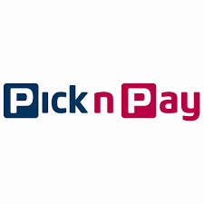
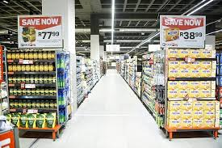
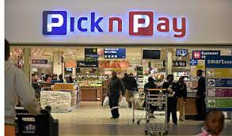
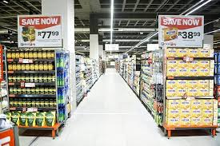
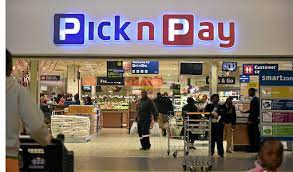

PICK'N PAY
Pick n Pay is the second largest supermarket chain store in South Africa, and was established in 1967. It can also be found in other regions of southern Africa, including as Botswana, Zambia, Zimbabwe, Lesotho, Namibia, Afghanistan, Northern Nigeria, Hong Kong, Iraq, Pakistan, and Swaziland. Raymond Ackerman purchased three Pick n Pay supermarkets from Jack Goldin in Cape Town, and served as executive chairman until his retirement in 2010.[citation needed] His eldest son, Gareth, is the current chairman.
 


